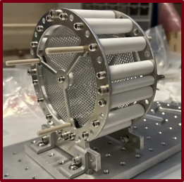

Strengths
- Actually enjoys the machine shop more than the design review.
- Will re-cut a part five times before admitting the first version was fine.
- Shows up to lab at odd hours when something's finally working.
MIT Mechanical Engineering · Class of 2027
Mechanical engineering student working across robotics, manufacturing, and propulsion hardware, through coursework, research, and internships at MIT and in industry.
Whether you're a recruiter, a fellow engineer, or someone who found this from a QR code on a robot — welcome. Everything below is real work, not filler.

Great Dome photo: Fcb981 / Thermos, Wikimedia Commons, CC BY-SA 3.0
Off the resume
Selected work
Action photos from competition day are still coming. Check the case study for the write-up in the meantime.
Robotics · MIT 2.007
Built for MIT's 2.007 robot design competition, where a good idea on paper still has to survive machining tolerances, assembly reality, and a field of over 150 people trying to beat it.

Manufacturing · MIT 2.008
Designed and tooled a real injection-molded product for MIT's 2.008 manufacturing class, the class where a part either comes out of the mold looking right or it doesn't, and shrinkage doesn't care about your CAD tolerances.
Research · MIT 2.671
Built a computer-vision rig with ArUco markers to actually measure how fast riffle, overhand, and machine shuffling randomize a deck, over 210 trials.

Electric propulsion · MIT 16.522
Machined and assembled ion thruster hardware for 16.522, then got it running long enough to see plasma on camera.
Experience
Supporting Ion Implant and Laser Spike Annealing tools in a high-volume semiconductor fab. Cut recurring equipment alarms by 15% through root-cause analysis and corrective action, and ran preventive maintenance across 30+ production tools, including source head replacements and rebuilds.
Designed commercial aviation fueling systems in the Aviation and Federal practice. Laid out fuel tank floors for three 44,000-barrel tanks in AutoCAD and Bluebeam, and designed a 15-gate hydrant fueling system for LAX Terminal 5, from isolation valve placement through flow calculations and P&ID drawings.
Designed and machined a rotating ionic liquid drying stand for vacuum operation up to 2000 rpm, and explored methods for producing 100 nm porous glass for ionic liquid uptake using thermal processing, acid leaching, and SEM imaging.
Competition robotics in 2.007, injection molding in 2.008, experimental measurement in 2.671, and electric propulsion hardware in 16.522.
Capabilities
CAD, mechanism design, design for manufacturing, tooling considerations.
Machining, rapid prototyping, additive manufacturing, injection molding, assembly.
Instrumentation, experimental design, data acquisition, validation, iteration.
Python, MATLAB, technical analysis, computer vision, statistical metrics.
About
I'm a mechanical engineering student at MIT, class of 2027. My coursework and research span competition robotics, manufacturing, measurement, and propulsion hardware, and I've interned in equipment engineering at TSMC and mechanical design at Burns & McDonnell. Outside of class, I spend most of my time in the shop or in lab, taking a project from CAD to a tested, working version.
Contact